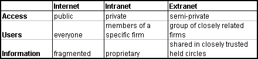

Extranet - a reference page
Updated by Kerstin Forsberg 22 September 1999
First wave--Internet, second wave--Intranets and now the third wave of internet evolution--Extranets. Many corporations have developed pretty elaborate intranets and are now kicking the extranet idea around. So what's it all about?


I continuously follow the development and application of internet-technologies with special focus on the emerging concept extranet.
This page will hopefully provide an interesting link and quotation collection with pointers to valuable sources for information and inspiration regarding extranet, it's applications and the mechanisms behind it.
Since March 1997 I have updated this page every month. During this period the number of hits when searching for the word "extranet" using any search engine have been multiplied several times. A number of companies and magazines now use "Internet / intranet / extranet" as their standard-phrase.
Suggestions, comments and questions are welcome to my mailaddress. (kerfor@netg.se).
Content
Related standards and projects
References in Swedish
(separate document)
Number of hits since
7 January 1998:
FastCounter by LinkExchange
But first a personal reflection: Instead of talking about different types of nets it would be better to discuss the communication and security mechanisms for different levels of access and different scope of individuals. Mechanisms supporting extended enterprise communications i.e. applications spanning company boundaries, to include a complex web of relationships between a company, its partners, customers, suppliers and its markets and even its products. All of them being individual nodes in the web, internal or external, or in between. Who knows where in the world of virtual companies, extended enterprises and cybercorps?
Let me quote one of the most interesting articles listed in my collection, under the headline Security issues, Trust Management on the World Wide Web by Rohit Khare and Adam Rifkin:
To date, "Web Security" has been associated with debates over cryptographic technology, protocols, and public policy, obscuring the wider challenges of building trusted Web applications. Since the Web aims to be an information space that reflects not just human knowledge but also human relationships, it will soon realize the full complexity of trust relationships among people, computers, and organizations.
Definitions and Introductions
Unlike the Internet, an extranet is not wide open.
Unlike an intranet, it is not restricted to internal use.
An extranet is a state of mind, not a technology.
From Extranets: The Complete Sourcebook
by Richard H. Baker, see below
- What Is...extranet

- Understanding Net-Speak
(Business Week Annual Report on IT 06/22/98) - Extranet - PC Webopaedia Definition and Links
- The Free On-line Dictionary of Computing
- TechWeb Encyclopedia
- CNET.COM Glossary
- ZDNet Webopedia Definition and Links
- What's an extranet? and other key terms
- Internet, Intranet, Extranet: Terms and Definitions
- What Differentiates an Extranet from an internal-Only Intranet
and the Public Internet? - Turns of Phrase: Extranet
World Wide Words - Introducing Extranets
From The Complete Intranet Resource
Summary table Internet-Intranet-Extranet

Figure from: The evolution of the Internet into *****net continues by
Dr. Linda Volonino
Stop thinking of networks and digital technologies
as media for managing information and
start thinking of them as media to manage relationships.
From The Relationship Revolution
by Michael Schrage, se below
Developing an Internet Strategy For Your Company 
How an extranet can save you money and make your company more agile. From your Mingo Co. Guide to management by F. John Reh
Enter the Extranet 
What can organizations gain from including outsiders in their intranets?
CIO May 15, 1997
The Internet is the conceptual birthing chamber of both intranets and extranets, and universal connectivity has liberated corporate communications practices.
Even when everyone in an organization supports the initiative to develop an extranet, the magnitude of the change should not be underestimated.
The Relationship Revolution 
by Michael Schrage
Is the digital technology that is in your organization designed to better manage critical information or to better enhance critical relationships?
Consequently, the real future of digital technologies and networks rests with the architects of great relationships -- not just the architects for timely bits and bytes of information.
Extranet Strategist - On Securing and Managing an Extranet 
The first quarterly newsmag to focus solely on extranet security and management issues.
Extrapolating the future of extranets 
by Nelson, M. 1999, in InfoWorld, May.
Toward a unified view of electronic commerce
Frederick J. Riggins, Hyeun-Suk (Sue) Rhee
Communications of the ACM, Vol. 41, No. 10 (Oct. 1998), Pages 88-95
We belive the development of "extranets" provides a link between the firms's intranet and Internet strategies that will broaden the relatively narrow defintion of e-commerce employed bu many managers.
Intronets are extranets where external trading partners receive controlled access behind the intitiator's firewall and into the intitiator's intranet ... interorganizational decision support systems ... the trading partner may become locked-in to the intronet.
Supranets is a consortium sponsored and controlled, interorganizational network providing seamless communication services between member organizations across multiple types of application ... interorganizational groupware systems ... promise various efficiency improvements across a business ecosystem (The Death of Competition: Leadership in the Age of Business Ecosystem by James F. Moore)
Buzzword Alert: Embedded Extranets
InternetWeek, 01/18/98
An embedded extranet is a corporate Website that queries a second company's database and transparently delivers results. The embedded extranet is a strategic advantage because it eliminates a step for the user.
Ultranet, the next network
Javaworld November 1997
A bleeding-edge federation of startup companies strives to reinvent the next-generation network
Stage three: extranets
... I will characterize the Extranet stage as the last stage in the evolution of the idea of giving away free information and software, an idea that gradually may be reaching the limits of its value. In nature, this process is called eutrophication, and can be defined as the process by which nutrients are added to a system.
Stage four: the ultranet
Business model: value exchange of goods and services (open, complex market economy) Winners: creative companies of all sizes -to be determined
Extraordinary Extranets
WebReference.com - The Webmaster's Reference Library
Extranets have indeed arrived and may well mean changes to how you view your business relationships. Extranets offer extraordinary benefits, but their risks and their pitfalls are legion.
Intranets: The Way to a Wider Tomorrow
by Carl Frappaolo, Delphi Consulting Group, A Thought Leadership Articles
Currently, the rate of deployment of extranets is minimal. But given the relative immaturity of the intranet itself , it is reasonable to project great strides will come in this area within the next two years.
Extranet: The "Third Wave" in the
Internet Electronic Commerce
By Nahum Goldmann, Journal of Internet Banking and Commerce, January 1997
The Extranet is also likely to redefine the business evolution of a conventional corporation into "the knowledge factory". It will radically change the way private and public sector organizations would conduct their business in the new Internet-driven global economy.
A typical Extranet site is divided into open and secure segments. Access security is at the foundation of the Extranet concept. Secure connections between computers create a virtual private network, using inexpensive and ubiquitous public lines.
"Extranets" in a nutshell
What are extranets? Do you have one? Do you need one? NetscapeWorld, January 1997
In December, Jim Barksdale, president and CEO of Netscape, published a column on Netscape's home page touting "extranets." This summarizes that column, with some clarifications and examples you may wish to explore.
By Invitation Only
WebMaster Online October 1996
Businesses are discovering the benefits of giving intranet access to a few select outsiders. Increasingly, companies allow selected outsiders-partners, vendors, distributors, contractors, clients, customers and others-to slip through the barbed wire of the firewall to share at least a corner of their corporate estates.
At this early stage of the intranet game, maintaining that delicate balance of openness and security can add up to one big IS headache.
Extranets and Intergroupware
Intranet / Extranet Benefits
by Richard R. Reisman, President, Teleshuttle Corporation
A convergence for the next generation in electronic media-based activity.
The impact of this transformation over the next 1-3 years is primarily social and organizational, not technical.
And many more articles ....
- Use TechSearch on the TechWeb -- The Technology Super Site to search several other articles from more than 15 magazines.
- NetBusiness - Extranet collection of articles, CMP Net, The Technology Network
- Intranets and Extranets Article Index from CIO magazine
- Search ZDNet's Computer Magazine Archive for: extranet
- Bitpipe.com
A research database that specializes in locating in-depth technology research and analysis reports.
Extend the company's internal network outward to include all
those with whom the company interacts in the marketplace.
Spin a grand web to include employees, suppliers,
regulators, and customers; they all become part of
your company's collective being.
They are the company.
From Out of Control in the chapter
Networks Economics by Kevin Kelly.
Building an Extranet 
Connect Your Intranet With Vendors and Customers
by Julia Bort, Bradley Felix
This book provides complete information and working details for building the network behind Intranets and Extranets, designing the applications, and getting everything up and running.
Extranets are built in all sorts of ways using all sorts of methods. But they do have a few elements in common. End user must be authenticated. This differ from basic password-protected Web-site on the Internet in that, with Web-sites, few efforts are made to truly authenticate the identity of a person.
BLUR The Speed of Change in the Connected Economy
by Christopher Meyer and Stan Davis
Most organizations have habits and structures that keep them at arm's length from the rest of the world.
Since you can't define the boundaries of your connected organization from the outside, you shouldn't define them from the inside either. That's why the distinction between "intranet" and "extranet" is a step backward. It's like putting a blockage in every capillary. It's unconnected and therefore unhealthy.
Extranets: The Complete Sourcebook
by Richard H. Baker
... to learn more about this new way of looking at the networked world and about the types of applications that can bring it to practical reality.
Cybercorp, the new business revolution
by James Martin+co
The deep structural changes are much more important than the use of conventional Web sites.
The ultimate consequence of computerized competition is that the battle between the competing cybercorps becomes fast-moving, automated, agile, worldwide, and cybercorps are electronically linked to numerous partners.
Book-list
See also Amazon's new book-list ordered by subject: Extranets (Computer networks)
The ICDT Model: Towards a Taxonomy of Internet-Related Business Strategies
by Albert A. Angehrn, at Insead, The Centre for Advanced Learning Technologies in France
Angehrn proposed this model to assess the Internet strategy of big businesses - looking at their presence in the virtual space of the Web from the perspective of Information, Communication, Distribution and Transactions (ICDT).
Related Standards and Projects
Rely on universal standards; the more common they are,
the more it pays you to stick to that standard.
From the New Rules for the New Economy
by Kelvin Kelly.
Extranet disconnected
Shifting standards are making it tough to piece together a working extranet
InfoWorld Electric, January 19, 1998.
Any any serious discussion about "extranet standards" must begin with an immediate disclaimer. No such thing exists yet. What we have instead are a few Internet protocols that are particularly useful for extranets, most of which are still in development.
The Internet Inter-ORB Protocol (IIOP)
Object Management Group
OMG is developing the "Architecture for the Connected World" through its worldwide standard specifications: CORBA/IIOP,Object Services, Internet Facilities and Domain Interface specifications.
The IIOP specifies a standardized interoperability protocol for the Internet, providing "out of the box" interoperation with other compatible ORBs based on the most popular product- and vendor-neutral transport layer.
Sigma: Security for Distributed Object Interoperability
Between Trusted and Untrusted Systems
... researching the integration and interoperation of security technologies into distributed computing environments based on CORBA ... allow controlled, selective exchange of object-oriented services among separate distributed systems that differ in security policy, mechanisms, and assurance.
Some Products and Cases
Our fascination with technology has made us forget
the key purpose of information: to inform people.
All possible channels for exchanging information should be
considered, from tying together intranets to regular face-to-face
meetings, co-location, and staff rotation programs.
From Information Ecology, mastering the information
and knowledge environment, by Thomas H. Davenport
- Aventail
Trusted Communication as a Competitive Advantage -
We're not just tying networks together; we're linking people to resources.
Internet technology has evolved to a point that companies can now put business-critical applications to the test. Security, performance, and standardization issues have slowed adoption of extranets, but today's emerging solutions can be deployed in such a way that these no longer have to be barriers. - Netscape Process Manager
for Extended Enterprise Process Automation
Automates dynamically-changing processes that involve multiple organizations and external parties, such as job bidding, contract negotiation, or customer management. - Beyond expectations
How leading companies are using Lotus Notes to jump-start the I-net revolution. Includes The Lotus Solutions Framework™ covering the entire landscape of collaborative business challenges. The evolution of Collaborative Business Solutions along two dimensions: - they enable increasingly complex work-from information flow to knowledge flow to work flow
- they connect increasingly complex organizational structures-from departments to entire enterprises to multiple organizations
- Differential
Extranet software lets businesses provide service and support to customer and partner communities over the Internet in a secure, reliable and controllable way.
See also: Yahoo list of extranet companies
Security issues
A corporation needs to protect its competitive
information assets while at the same time optimizing
its information exchange.
Security should not be a reason for avoiding cyberspace,
but any corporation that remains amateurish
about security is asking for truble.
From Cybercorp, the new business revolution
by James Martin
Links
- Security - PC Webopaedia Definition and Links
- Glossary - from Security Info
- W3C Security Resources
- COAST Hot List
(Computer Operations, Audit, and Security Technology) is a multiple project, multiple investigator laboratory in computer security research in the Computer Sciences Department at Purdue University. - CR&T Security Links
A special page with information and security links which is useful when securing a system or a corporate network, compiled by Carlstedt Research & Technology AB
Articles
- Trust Management on the World Wide Web
An excellent overview from the Danish peer-reviewed journal on the Internet: First Monday
Trust management is an emerging framework for decentralizing security decisions that helps developers and others in asking "why" trust is granted rather than immediately focusing on "how" cryptography can enforce it. - Internet Firewalls and Security - a Technology Overview
- Extranet security: What happens if your partner turns against you?
Computer Security Alert, October Edition
A forum for the people responsible for intranet, extranet and/or internet initiatives.
Other References in English
by Richard H. Baker Author: Extranets: The Complete Sourcebook
Electronic Commerce Resource Center, Bremerton, WA USA
a list of f 22 reviewed Web sites from Infoseek, part of the wider scope E-commerce.
Center for Managing in Electronic Environments
Compiled by: Carolyn Kotlas, MSLS, Institute for Academic Technology
a reading list of books and journal articles
Back to Kerstin Forsberg's homepage